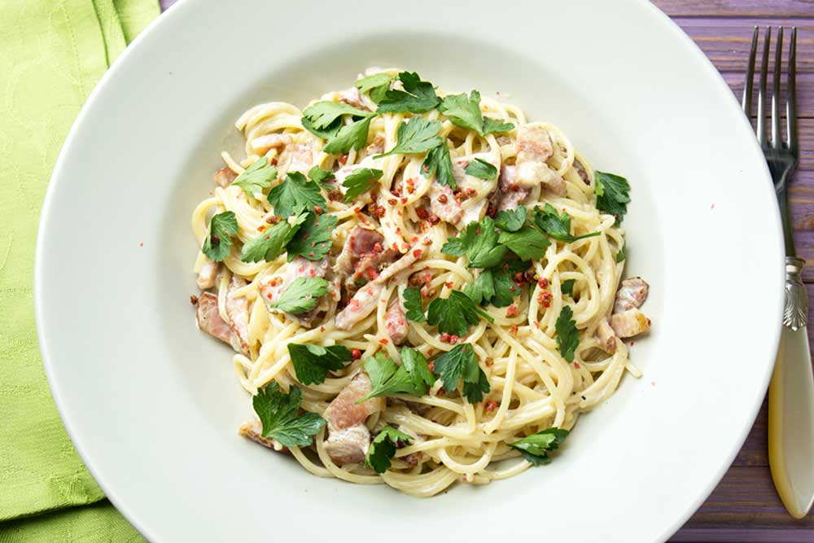
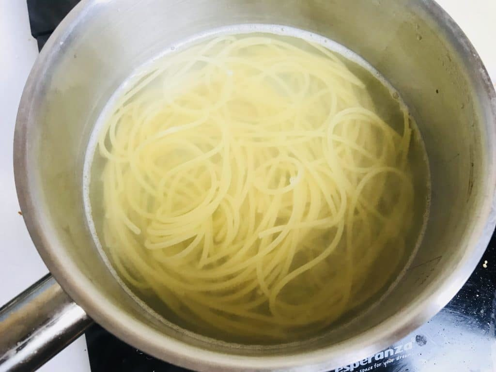

Рецепти від Юри
ЯЙЦЯ БЕНЕДИКТ
Ще один спосіб різноманітити яєчний сніданок – приготувати яйця Бенедикт. Це дуже популярна страва у Америці та
Європі, яка міцно закріпилася у багатьох українських ресторанах.
ЯК ПРИГОТУВАТИ ЯЙЦЯ БЕНЕДИКТ
Інгредієнти
- 2 шт. Яйце
- 1 шт. Цибуля
- 50 г Бекон
- 2 шт. Тост
- 50 г Вершкове масло
- 1 ст. л. Оцет
Для Суоуса "Голондез"
- 65 г Вершкове масло
- 3 шт. Яєчний жовток
- 1 ч. л. Вода
- 1 ст. л. Лимонний сік
ЯЙЦЯ БЕНЕДИКТ: ПОКРОКОВИЙ РЕЦЕПТ
- Дрібно наріжте цибулю, бекон наріжте невеликими брусочками.
- У каструлю налийте воду, доведіть до кипіння, зменшіть вогонь і влийте туди оцет. Розмішайте воду, зробивши
воронку. Акуратно розбийте в воронку води яйце, трохи перемішайте і варити 2 -3 хвилини. Дістаньте шумівкою і
викладіть на щільне паперовий рушник, щоб вода вбралася.
- На пательні розтопіть вершкове масло і підсмажте тости. Цибулю обсмажте з беконом.
- Приготуйте голландський соус. Поставте каструлю на парову баню - на каструлю з водою поставте миску, щоб вона не
торкалася води. У миску покладіть 65 г вершкового масла, розтопіть його, помішуючи віночком, і посоліть. В
окремій мисці збийте яйце і тонкою цівкою влийте яйце в масло, збийте і додайте лимонний сік.
- Сформуйте страву: на тости викладіть бекон з цибулею, зверху яйце і полийте соусом голландез.
СПАГЕТІ КАРБОНАРА: МІЙ ДОМАШНІЙ РЕЦЕПТ
З безлічі варіантів італійської пасти спагеті карбонара мені подобається найбільше. Її дуже просто приготувати, а ще
це дуже швидко і недорого. У цієї пасти багато різних варіантів приготування. Іноді її подають з цілим жовтком
зверху і не використовують вершки.
ЯК ПРИГОТУВАТИ СПАГЕТІ КАРБОНАРА

Інгредієнти
- 250 г Макарони (спагеті)
- 100-150 г Бекон
- 50 г Пармезан
- 50 г Цибуля (біла)
- 2 шт. Яйце
- 50 мл Вершки (30-33%)
- 20 г Петрушка (листя)
- 2 зубчики Часник
- 2 ст. л. Оливкова олія
- 20 г Сіль
СПАГЕТІ КАРБОНАРА: ПОКРОКОВИЙ РЕЦЕПТ
- Бекон (100-150 г) поріжте невеликими шматочками або використовуйте вже готові смужки. 2 зубчики часнику
роздушіть ножем, ½ шт. цибулини наріжте дрібними кубиками. Розігрійте пательню з 1 ст. л. оливкової олії та
додайте спочатку часник, через 1 хвилину бекон і потім цибулю. Обсмажте кілька хвилин.

- Потім додайте яйце і вершки (50 мл). Добре перемішайте, щоб суміш стала однорідною. Відразу зніміть пательню з
вогню, щоб яйце не згорнулося.

- Поставте варитися спагеті. На 2 літри води додайте 20 г солі та 250 г спагеті, 1 ст. л. оливкової олії. Варіть
приблизно 7 хвилин, потім злийте воду. Можна залишити трохи води від спагеті й потім додати до соусу для більшої
соковитості. Досить 1-2 ст. л.

- З'єднайте готову пасту із соусом, добре перемішайте. Натріть пармезан (50 г), додайте перець за смаком і листя
петрушки (20 г).

- Смачного